补记
《科学素养文库·科学元典丛书（第一辑）》陆续出版后，得到了读者的普遍好评，这使我们有信心继续进行第二辑的遴选工作。由于各方面的困难，新的遴选工作曾一度进展缓慢。经过不懈努力，现在第二辑书目已被确定下来。相信第二辑的出版，同样会受到读者的欢迎。
周雁翎
2008年6月6日
北京大学
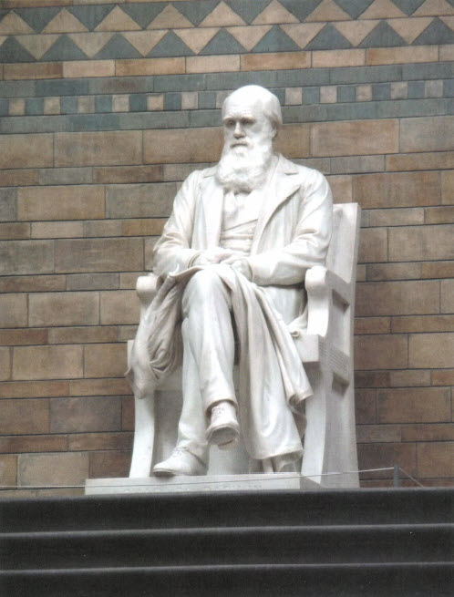
位于英国伦敦自然历史博物馆的达尔文雕像。
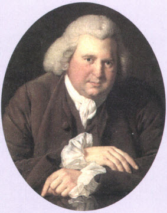
达尔文的祖父拉兹马斯·达尔文（Erasmus Darwin，1731—1802），医生、地质学家、博物学家、政治进步人士，主张无神论，著有《动物生理学》。
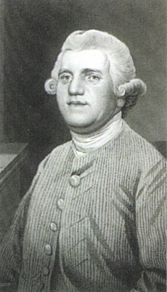
达尔文的外祖父乔塞亚·韦奇伍德（Josiah Wedgwood，1730—1795），英国著名的“韦奇伍德”美术瓷器厂创办人，1769年建立了伊特鲁里亚工业示范城。他与拉兹马斯是好朋友。
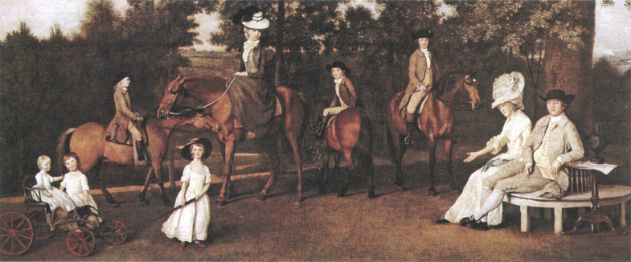
乔塞亚·韦奇伍德一家。右侧坐着的是乔塞亚及其妻子，中间戴白色帽子的是达尔文的母亲苏珊娜。
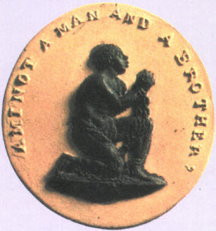
韦奇伍德家庭的勋章。
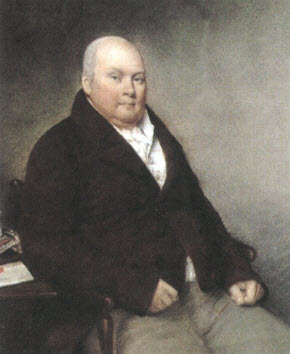
达尔文的父亲罗伯特·韦林·达尔文（Robert Waring Darwin，1766—1848）。他19岁时就出版了一部医学著作。他慈爱但过于严厉，一心希望达尔文长大后当医生，常常批评达尔文读书不用功，达尔文对父亲很是尊敬和爱戴，却又害怕会令父亲失望。
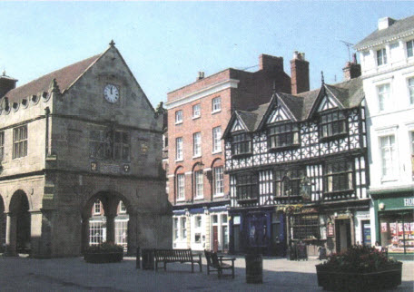
1809年2月12日，达尔文出生于英国英格兰西部城市什鲁斯伯里（Shrewsbury）的一个名叫Shropshire的乡村，图为什鲁斯伯里广场。
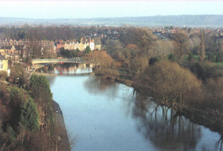
今日Shropshire乡村的一条小河。
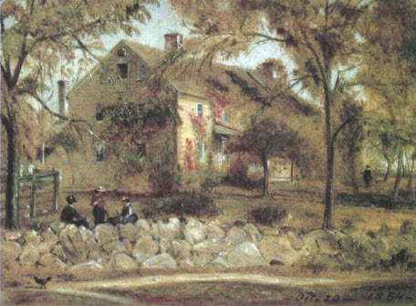
达尔文家族祖宅，名为Mount House，由达尔文的父亲于1800年建成，1809年达尔文就出生在这所房子里。
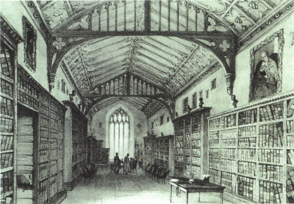
什鲁斯伯里学校图书馆。 达尔文8岁时在该校走读，后来他称这是他枯燥的学习生涯的开始。那时候达尔文无心学习诸如语言、历史、文学等传统文化课，却不知疲倦地观察植物、昆虫和鸟类。
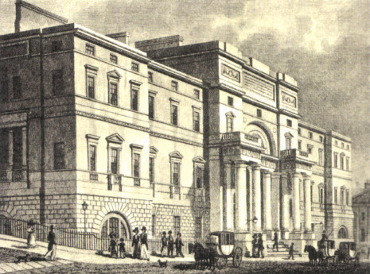
爱丁堡大学是英国一所著名的以医科为招牌的大学。达尔文16岁时在父亲的意愿下进入该校攻读医科专业。在这里，枯燥的课程使他对医学彻底失望，他不得不把兴趣转移到他的爱好上面来。但后来他却十分后悔没在这里好好学解剖学。
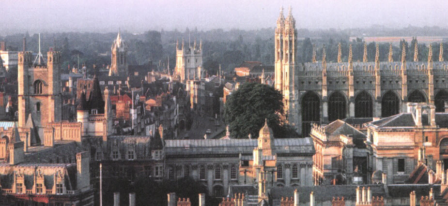
剑桥大学。 1827年，18岁的达尔文毅然转学到剑桥大学，他兴趣广泛，一边攻读文凭，一边饶有兴致地学习几何学、自然神学以及艺术等。
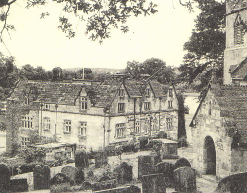
达尔文舅舅的庄园。达尔文喜欢这里，因为每到打猎季节，他就能在附近森林里得到充分的精神享受。达尔文自幼对大自然有着浓厚的兴趣，他骑马、打猎、钓鱼、采集矿石、捕捉昆虫、钻进树林观察鸟类的习性……他常常边观察边思考，甚至忘记了危险。有一次，达尔文在一个古代城堡上散步，像往常一样陷入了沉思，突然一脚踩空，从城垛上跌了下来。甚至这个时候，他还在思考自己的跌落时的反应怎么与之前的心理学家认为的不一样。
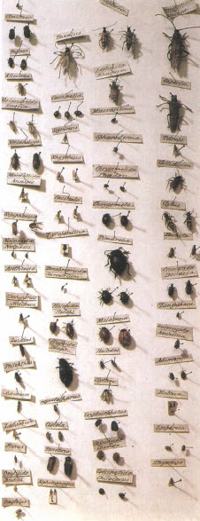
上学时期的达尔文爱好搜集标本，并将搜集来的甲虫进行仔细分类。达尔文在自传里提到：“除了搜集甲虫标本，其他没有一件事情能激发我的热情，引起我的快乐。”在剑桥大学上学期间的某一天，达尔文到伦敦郊外的一片树林里转悠。突然，他发现在一块将要脱落的树皮下有两只奇特的甲虫，他马上左右开弓抓在手里观看，正在这时，树皮里又跳出一只甲虫，达尔文毫不犹豫把手里的甲虫藏到嘴里，伸手又把第三只甲虫抓到。这时的达尔文，只顾得意地欣赏手中的甲虫，却忘了嘴里的那只，直到它放出毒汁，把他的舌头蜇得又麻又痛。后来；人们为了纪念他首先发现的这种甲虫，就把它命为“达尔文”。
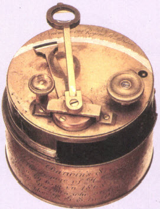
达尔文用过的“六分仪”。
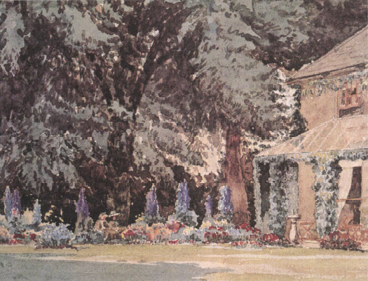
党豪斯（Down House）别墅。达尔文从33岁起，就常居住在这里，除了一些拜访活动和各种疗养，他基本上足不出户。在此，他也接待过许多杰出的人物，比如胡克、莱伊尔、赫胥黎、赫克尔、华莱士……
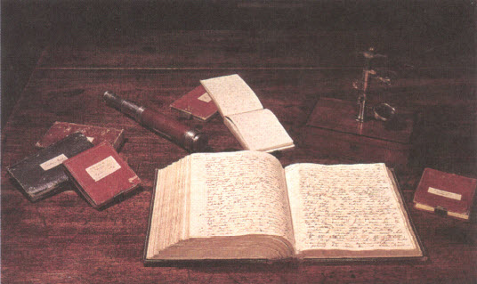
达尔文的手稿。达尔文因为健康的原因，晚年每天只能集中精神做四个小时的研究工作。在这样的生活中，阅读浪漫的小说成了达尔文重要的调剂。
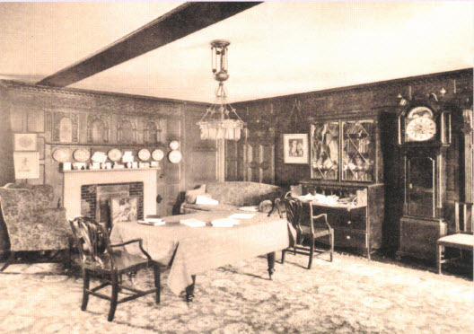
达尔文的居室内景。达尔文故居位于伦敦南郊，至今保存完好，向游客开放。
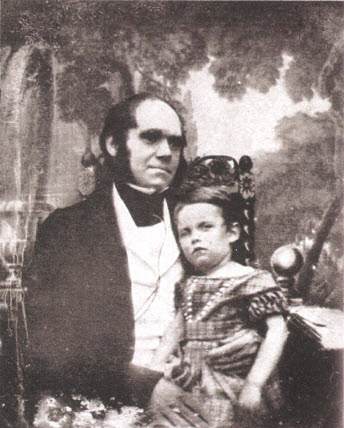
1842年，达尔文与长子威廉（William Erasmus Darwin，1839—1914）的合影。达尔文于1839年与埃玛·韦奇伍德结婚，婚后育有六子四女，但有三个不幸夭折。1839年达尔文当选为伦敦皇家学会的委员。在达尔文的家族中，有很多人曾经当选为伦敦皇家学会的委员：他的祖父、外祖父、父亲以及达尔文的三个儿子：乔治（George Darwin，1845—1912），天文学家、数学家；弗朗西斯（Francis Darwin，1848—1925），植物学家；贺瑞斯（Horace Darwin，1851—1928），土木工程师。
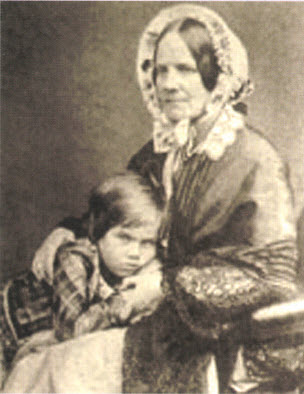
埃玛与儿子伦纳德（Leonard Darwin，1850—1943）的合影。
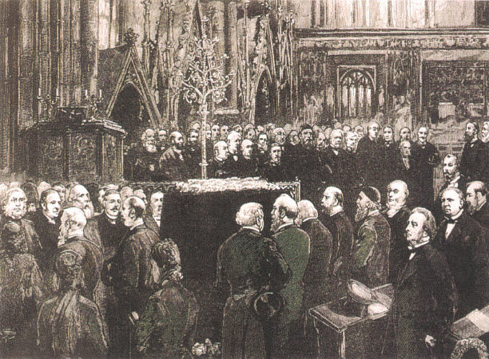
1882年4月26日，达尔文的葬礼在威斯敏斯特大教堂隆重举行。他的墓碑与牛顿的墓碑紧邻。
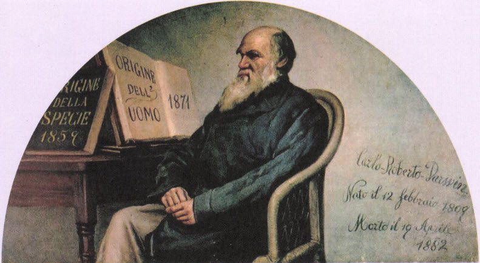
晚年的达尔文。 尽管体弱多病，但达尔文以惊人的毅力，顽强地坚持进行科学研究和写作，连续出版了《人类的由来及性选择》、《人类和动物的表情》等很多著作。达尔文本人认为他“一生中主要的乐趣和唯一的事业”是他的科学著作。
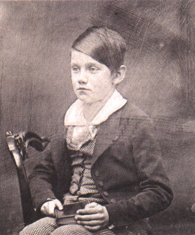
达尔文的长子威廉。达尔文在自传里写道：“我的长子生于1839年12月27日，我马上开始记录他所表现的各种表情的开端，因为我相信，即使在这个早期，最复杂最细微的表情一定都有一个逐渐的和自然的起源。”
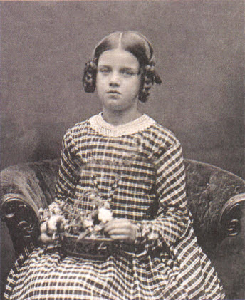
达尔文的女儿安妮（Anne Darwin，1841—1851）在10岁时不幸夭折，这一事件在达尔文的一生中都是一个难以愈合的伤口。更何况达尔文性格格外敏感细腻，对于自然界存在的诸多苦难和痛苦，怀有深刻体会。